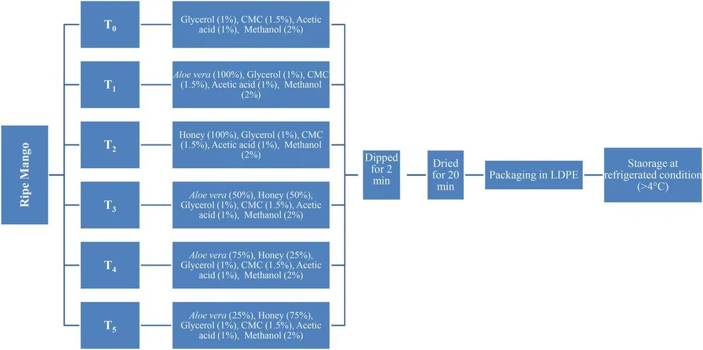
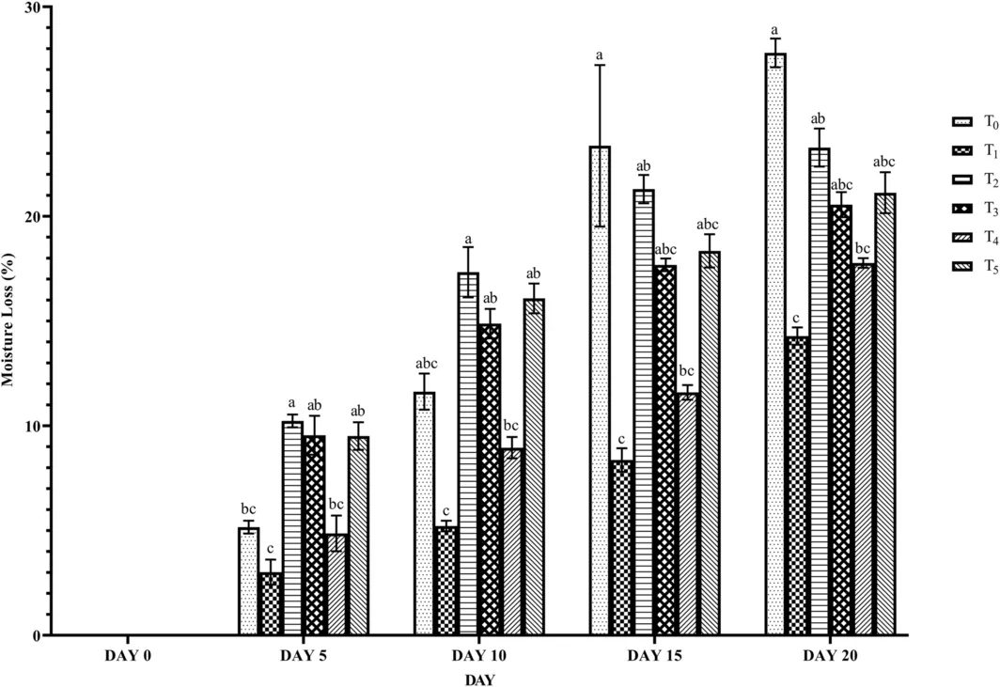
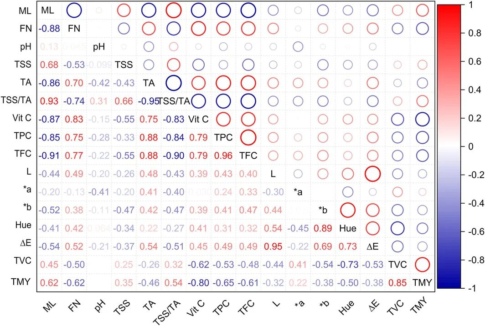
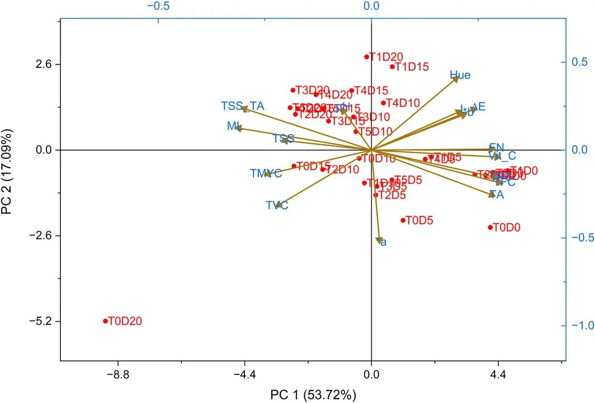

Aloe vera geli kesilgan mangoni yangi saqlashga yordam beradi


Kesilgan mevalar namlik bug‘lanishi va mikroblar ta’sirida tezda o‘z sifatini yo‘qotadi. Tadqiqot shuni ko‘rsatdiki, aloe vera gelidan tayyorlangan yupqa parda samarali to‘siq vazifasini o‘taydi. Bu usul 4°C dan past haroratda mangoni 20 kungacha vitaminlar va tuzilishini saqlagan holda saqlash imkonini beradi.
Asosiysi
- 100% aloe vera geli namlik yo‘qotishni 48% ga, buzilishni 50% ga kamaytiradi.
- Asal qoplama tarkibida polisaxarid matritsasining to‘siq xususiyatini pasaytiradi.
- Qoplama 4°C haroratda S vitamini va antioksidantlarni saqlab qoladi.
Batafsil
Himoya qoplamasini yaratish uchun tadqiqotchilar 1% glitserin (plastifikator), 1,5% karboksimetilsellyuloza (plyonka hosil qiluvchi), 1% sirka kislotasi (pH ni pasaytirish uchun) va 2% metanol bilan boyitilgan aloe vera gelidan foydalanishdi. Aralashma 70°C gacha qizdirildi va mango bo‘laklari eritmaga 2 daqiqaga botirildi. Tajribada asalning turli konsentratsiyalari solishtirildi, ammo aynan 100% aloe vera geli eng yaxshi natijani ko‘rsatdi.
Sof aloe vera geli 20 kunlik saqlash davomida nazorat namunalariga nisbatan vazn yo‘qotishni 48% ga va mahsulotning buzilishini 50% ga kamaytirdi. Tahlillar shuni ko‘rsatdiki, asalning yuqori gigroskopikligi aloe bilan aralashtirilganda polisaxarid matritsasini buzadi va qoplamaning himoya xususiyatlarini pasaytiradi. Sof aloe ishlatish fenollar, flavonoidlar va S vitaminini saqlab qolishga yordam berdi.
Cheklovlar
Tadqiqot Bangladeshdagi mahalliy mango navida o‘tkazilgan, shuning uchun natijalar boshqa meva turlari uchun farq qilishi mumkin.
Maqolaning to'liq tarjimasi
Annotatsiya
DMRT — Dunkan koʻp qatorli taqqoslash testi, FN — qattiqlik, HPMC — gidroksipropilmetilsellyuloza, LDPE — past zichlikdagi polietilen, PAL — fenilalanin-ammiak-liaza, PCA — mikroorganizmlarni hisoblash uchun agar, PDA — kartoshka-dekstrozli agar, QC — sifat nazorati, TA — titrlanadigan kislotalilik, TFC — umumiy flavonoidlar miqdori, TPC — umumiy polifenollar miqdori, TSS — umumiy eruvchan quruq moddalar.
Mango (Mangifera indica) — bir uyli oʻsimlik, Anacardiaceae oilasiga mansub, butun dunyoda keng yetishtiriladigan iqtisodiy jihatdan eng muhim tropik meva. Bangladeshda 2025-yilda qariyb 139 ming gektar maydonda yetishtirilgan mango hosili 1872 ming metrik tonnadan oshdi. Mango klimakterik mevalar toifasiga kiradi — u makronutriyentlar (uglevodlar, kletchatka), mikronutriyentlar (A, B9, C, K vitaminlari) va minerallar (temir, magniy, kalsiy, kaliy, rux), shuningdek, antioksidantlar (karotinoidlar, fenollar, flavonoidlar) manbai hisoblanadi va tez buziladigan mahsulotdir. Kesilgan mevalar hosil yigʻib olingandan keyin yuqori suv faolligiga ega boʻlgani uchun mikrobial va fiziologik buzilishlarga moyil boʻladi, bu esa ulardan foydalanish va eksport qilishni cheklaydi. Shu sababli samarali, toʻyimli va barqaror saqlash usullari zarur.
Muhim
Tadqiqot kesilgan mangoni saqlashda aloe vera va asal qoplamalarining taʼsirini solishtiradi, chunki ularning kombinatsiyasi asalning gigroskopikligi tufayli qoplamaning barqarorligini yaxshilashi yoki aksincha, zaiflashtirishi mumkin.
Oʻsimlik asosidagi moddalar va oziq-ovqat qoplamalari istiqbolli hisoblanadi. Aloe vera va asal antioksidant, mikroblarga qarshi, zamburugʻlarga qarshi xususiyatlarga hamda namlik va karbonat angidridni (CO₂) ushlab turish qobiliyatiga ega. Aloe vera (suv, vitaminlar, glyukomannanlar, sterollar, aminokislotalar) bakteriyalar oʻsishini cheklaydi, mevalarning nafas olishini nazorat qiladi va oksidlanish natijasida yuzaga keladigan qorayishni kamaytiradi. Aralash gul asali tabiiy antioksidant boʻlib, sintetik analoglarni almashtirishi mumkin. Oldingi ishlar aloe vera geli va asal qoplamasi mevaning taʼmi, hidi va teksturasini oʻzgartirmasligini koʻrsatgan. Biroq, kesilgan mangoni saqlashda ushbu moddalar kombinatsiyasining salohiyati haqida maʼlumotlar yetarli emas. Bu tadqiqot kesilgan mahalliy mangoda sof va aralash aloe vera va asal qoplamalarini birinchi tizimli solishtirishni taqdim etadi.
Toʻliq yetilgan mangolar (mahalliy Ashwina navi, oltin-sariq rangli eti) 2025-yil aprel oʻrtalaridan iyun oʻrtalarigacha Bangladeshning Dakka shahridagi Kanchan bozoridan olingan. Aloe vera (Barbadensis Miller navi), aralash gul asali va past zichlikdagi polietilen (LDPE) paketlar ham mahalliy bozordan sotib olingan. Oshxona anjomlari 70% li etanol eritmasi bilan dezinfeksiya qilingan. Mangolar yuvilgan, tozalangan va kub shaklida (2 × 2 × 2 sm) kesilgan.
Izoh
Qoplamalar tayyorlash uchun aloe vera geli, aralash gul asali, glitserin (1%), karboksimetilsellyuloza (CMC, 1,5%), sirka kislotasi (1%) va metanol (2%) ishlatilgan.
Aloe vera geli barglardan ajratib olingan, blenderda maydalangan (18 000 ayl/min, 3 daqiqa, xona haroratida) va 850 mkm li elakdan oʻtkazilgan. Ekstrakt 63°C da 15 daqiqa davomida pasterizatsiya qilingan. Eritmalar glitserin, CMC, sirka kislotasi va metanol qoʻshib tayyorlangan, 70°C gacha qizdirilgan va tez sovutilgan. Aloe vera va asalning besh xil nisbati (100:0, 75:25, 50:50, 25:75, 0:100) sinovdan oʻtkazilgan (1-jadval).
Mango kubiklari eritma ichiga 2 daqiqaga botirilgan, soʻngra xona haroratida 20 daqiqa davomida quritilgan. Jami 350 ta meva ishlatilgan. Namunalar LDPE paketlarda > 4°C haroratda va 85% nisbiy namlikda 20 kun davomida saqlangan. Har bir ishlov berish uchta biologik takroriylikka ega boʻlgan. Har 5 kunda sifat baholangan (pH, titrlanadigan kislotalilik, TSS, C vitamini, fenollar, flavonoidlar, sensor baholash, mikrobiologik tahlil).
Ehtiyot bo'ling
Tadqiqot kuzatuv va eksperimental xarakterga ega; natijalar mango navi va saqlash sharoitlariga bogʻliq. Uy sharoitida konservatsiya qilish uchun qoʻllanma emas.
Barcha guruhlarda namlik yoʻqotilishining sezilarli (p ≤ 0,05) oʻsishi kuzatilgan. 20-kuni T₁ guruhida (100% aloe vera) namlik yoʻqotilishi 14,28% ± 0,42% ni tashkil etgan, bu nazorat guruhiga (T₀, 27,80% ± 0,69%) qaraganda sezilarli darajada past. Bu qoplama gaz almashinuvini cheklaydigan va mevaning qarishini sekinlashtiradigan yarim oʻtkazuvchan plyonka hosil qilishini tasdiqlaydi.
Muhim
100% aloe vera qoplamasi (T₁) namlikni saqlash va qattiqlikni saqlash boʻyicha eng yaxshi natijalarni koʻrsatib, asal aralashmalaridan ustun keldi.
Qattiqlik penetrometr yordamida baholangan (3,5 mm zond). 100% aloe vera (T₁) va T₄ aralashmasi (75% aloe vera + 25% asal) qattiqlikni yaxshiroq saqlashni taʼminlagan (> 90% va > 71%). Asalning gigroskopik qandlari polisaxarid matritsasini zaiflashtirgan boʻlishi mumkin, shuning uchun T₂, T₃ va T₅ namunalari tezroq yumshagan.
Eruvchan quruq moddalar (TSS) miqdori saqlash davomida oshgan. Ishlov berilgan namunalarda TSS oʻsishi nazoratga qaraganda kamroq ifodalangan, bu nafas olish jarayoni sekinlashganini koʻrsatadi. Titrlanadigan kislotalilik (TA) 5, 10, 15 va 20-kunlarda mos ravishda 20%, 27%, 68,9% va 65% ga kamaygan. Taʼm muvozanatini aks ettiruvchi TSS/TA nisbati ishlov berilgan namunalarda yuqoriroq boʻlgan.
Saqlash vaqtida pH qiymatlari biroz oshgan. Aloe vera va asal bilan ishlov berish nazoratga qaraganda pH barqarorligini saqlashga yordam bergan, bu esa buzilish jarayonlari sekinlashganini koʻrsatadi.
C vitamini konsentratsiyasi saqlash davomida sezilarli darajada kamaygan. 20-kunga kelib nazorat guruhi (T₀) 23,8 mg/100 g C vitaminini yoʻqotgan, T₁ guruhi (100% aloe vera) esa 7,91 mg/100 g ni yoʻqotgan, bu qoplamaning himoya taʼsirini tasdiqlaydi.


Rasmning to'liq tavsifi
Aloe vera va aralash gul asalidan tayyorlangan qoplamaning muzlatgichda saqlash vaqtida sharbat yo‘qotilishiga ta’siri. Qiymatlar o‘rtacha ± standart og‘ish (n = 3) ko‘rinishida keltirilgan. Har xil ustki belgilar bir xil saqlash muddati ichida ishlov berish usullari o‘rtasidagi statistik jihatdan sezilarli farqlarni ko‘rsatadi (p < 0,05), DMRT testiga muvofiq. Ikki faktorli dispersiya tahlili (ANOVA) ishlov berish (T), vaqt (D) va ularning o‘zaro ta’siri (T × D) p < 0,05 darajasida sezilarli ta’sir ko‘rsatishini aniqladi (agar boshqacha qayd etilmagan bo‘lsa). T0 — ishlov berilmagan nazorat namunasi (mango); T1 — 100% aloe vera qoplamali mango; T2 — 100% aralash gul asali qoplamali mango; T3 — 50% aralash gul asali va 50% aloe vera qoplamali mango; T4 — 25% aralash gul asali va 75% aloe vera qoplamali mango; T5 — 75% aralash gul asali va 25% aloe vera qoplamali mango.


Rasmning to'liq tavsifi
Saqlash muddati va iste’mol qilinadigan qoplama turlarining mango o‘zgaruvchan belgilari, biokimyoviy, mikrobiologik va fiziologik parametrlari bilan o‘zaro bog‘liqligining Pirson korrelyatsion tahlili (p ≤ 0,05). FN — qattiqlik; ML — namlik yo‘qotilishi; TA — titrlanadigan kislotalilik; TFC — umumiy flavonoidlar miqdori; TMY — umumiy mog‘or va achitqi zamburug‘lari soni; TPC — umumiy fenollar miqdori; TSS — umumiy eruvchan quruq moddalar; TSS/TA nisbati — ta’m indeksi; TVC — umumiy hayotchan mikroorganizmlar soni; Vit C — S vitamini.


Rasmning to'liq tavsifi
Saqlash muddati va iste’mol qilinadigan qoplama turlarining mango o‘zgaruvchan belgilari, biokimyoviy, mikrobiologik va fiziologik parametrlari bilan o‘zaro bog‘liqligining asosiy komponentlar tahlili (PCA). FN — qattiqlik; ML — namlik yo‘qotilishi; TA — titrlanadigan kislotalilik; TFC — umumiy flavonoidlar miqdori; TMY — umumiy mog‘or va achitqi zamburug‘lari soni; TPC — umumiy fenollar miqdori; TSS — umumiy eruvchan quruq moddalar; TSS/TA nisbati — ta’m indeksi; TVC — umumiy hayotchan mikroorganizmlar soni; Vit C — S vitamini.
Tadqiqot sxemasi
Maqola taqriz qilinadigan Food science & nutrition jurnalida nashr etilgan. Ammo bu ham bitta tadqiqot, yakuniy xulosa emas.
Manba
| Manba | Kategoriya | Litsenziya |
|---|---|---|
| Food science & nutrition (Europe PMC) | gels | CC BY 4.0 |
Manbalar
| Manba | Havola |
|---|---|
| Страница статьи | europepmc.org |
| Полный текст (PDF) | europepmc.org |
| DOI | doi.org |
| Метаданные Crossref | api.crossref.org |
| Europe PMC | europepmc.org |
| Иллюстрация | commons.wikimedia.org |